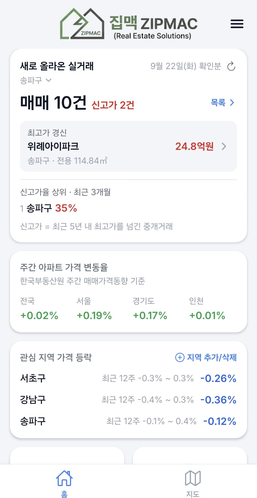
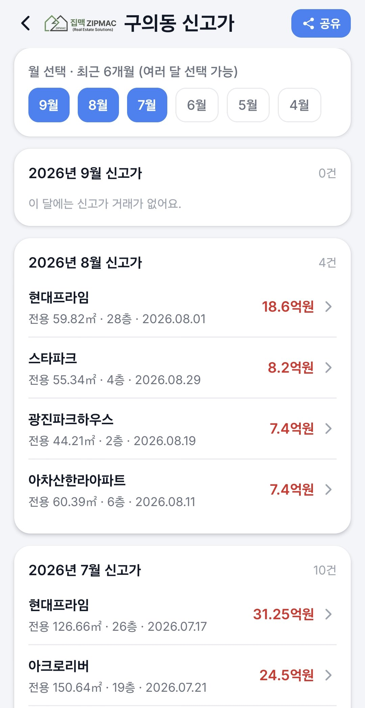
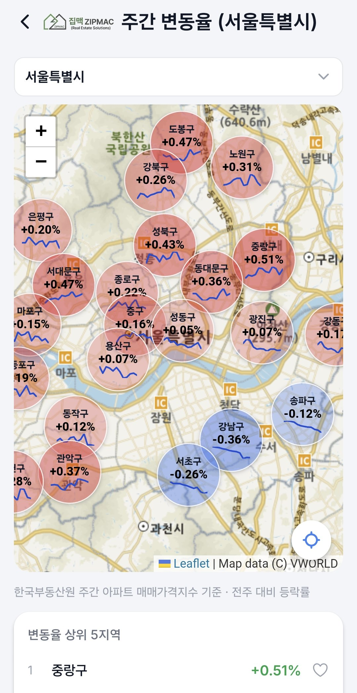
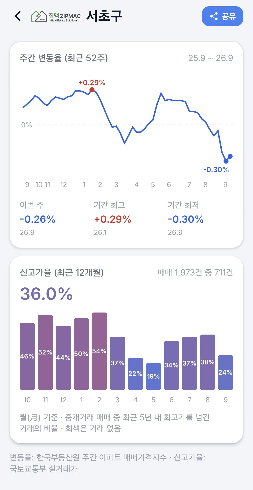
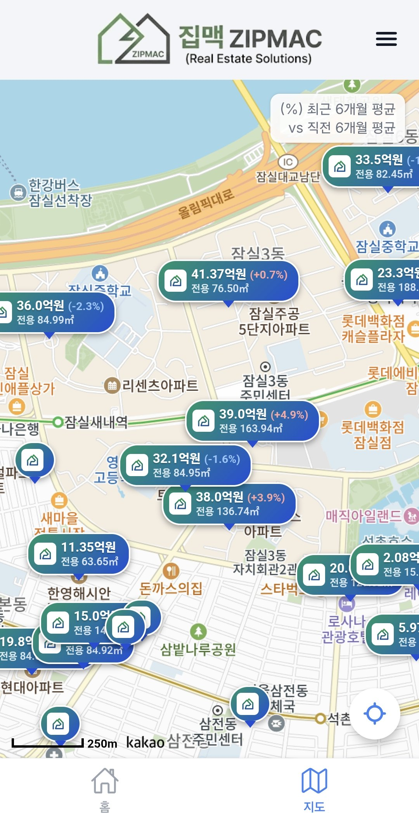
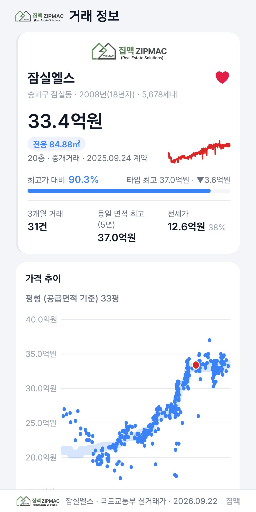
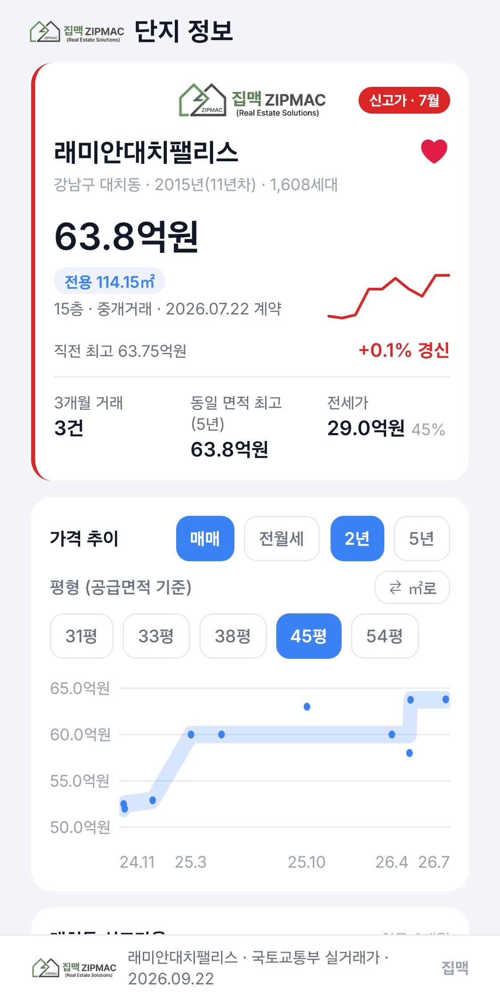
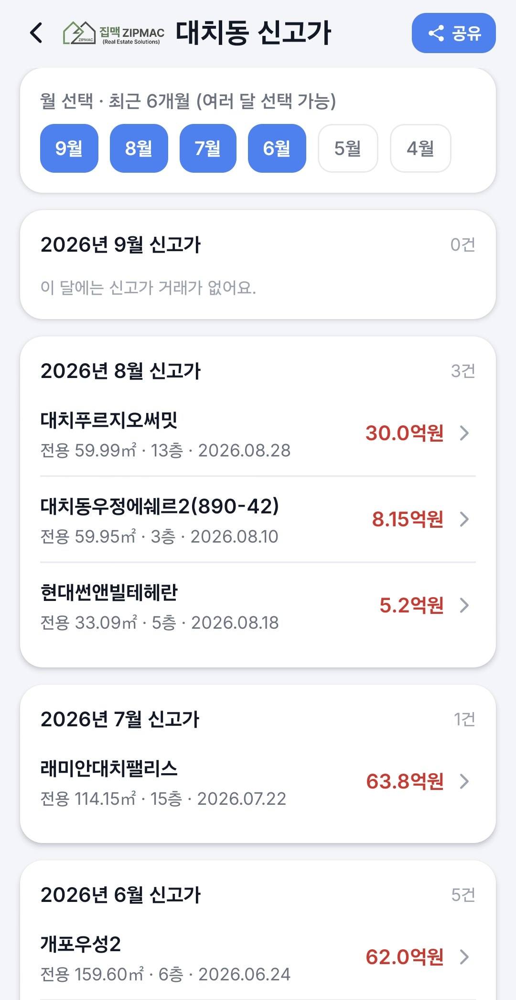
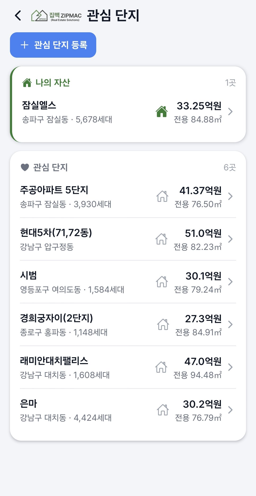

평균가는 이미 지나간 이야기입니다. 집맥은 국토교통부 실거래가에서 직전 5년 최고가를 넘어선 거래를 가려내, 어느 지역이 지금 움직이고 있는지를 지도 위에 먼저 보여줍니다.

아래는 실제 앱 화면입니다. 목업이나 합성이 아니라 그대로 캡처한 것입니다.








전국 단위 통계가 아니라 동(洞) 단위까지 내려갑니다. 평균에 묻혀 보이지 않던 신호를 꺼내는 것이 목적입니다.
구를 누르면 동 단위로 확대됩니다. 전체 거래 중 신고가가 차지하는 비율을 지도에 색으로 얹어, 열기가 번지는 방향을 한눈에 봅니다.
어느 단지가 언제 최고가를 갈아치웠는지 월별로 모아 봅니다. 최근 달이 먼저 오고, 여러 달을 함께 펼쳐 흐름을 읽을 수 있습니다.
한국부동산원 주간 아파트 매매가격지수를 발표 직후에 받아, 내 지역이 오르는 쪽인지 내리는 쪽인지 바로 확인합니다.
관심 단지에 새 거래가 등록되면 알려드립니다. 보유한 집은 ‘나의 자산’으로 따로 묶어, 내가 가진 면적의 최근 실거래가로 가치를 확인합니다.
집맥이 만들어내는 숫자는 없습니다. 공공기관이 발표한 원본을 가져와 정리하고, 판정 기준을 투명하게 적용할 뿐입니다.
실거래가는 계약 후 신고까지 시차가 있고, 해제(취소)된 거래도 있습니다. 집맥은 해제 거래를 통계에서 제외하지만, 표시되는 값은 어디까지나 신고된 내용 그대로이며 투자 판단의 근거가 아닙니다.
앱을 받기 전에 궁금하실 만한 것들을 정리했습니다. 더 궁금한 점은 아래 문의 주소로 알려주시면 답변드립니다.
회원가입도, 로그인도 없습니다. 받아서 바로 지도를 열면 됩니다.
| 제공 내용 | 아파트 실거래가·가격지수 정보 서비스 |
|---|---|
| 데이터 출처 | 국토교통부 실거래가, 한국부동산원 가격지수 |
| 이용료 | 무료 |
앱 오류 제보, 데이터 정정 요청, 개인정보 관련 문의를 아래 주소로 받습니다.
zipmac.apps@gmail.com오류 제보 시 앱 버전과 기기 모델을 함께 적어주시면 훨씬 빨리 확인할 수 있습니다.